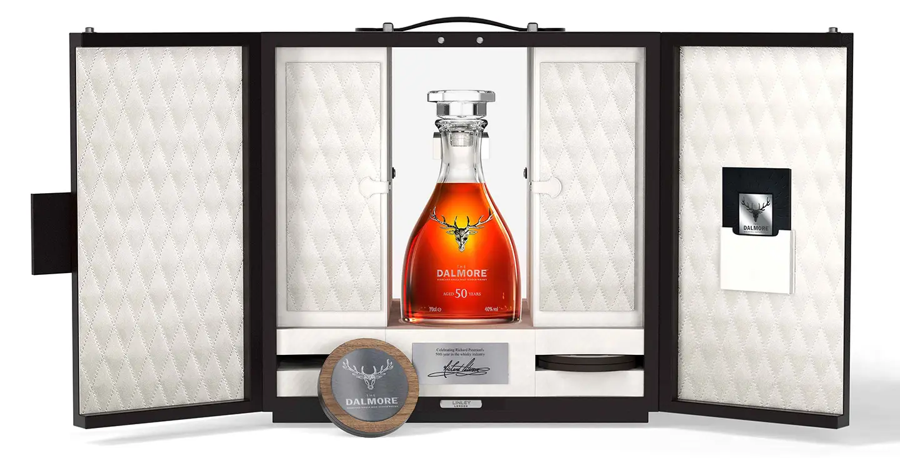

建議售價210萬元 再創頂級單一麥芽威士忌全新里程碑 日後增值空間絕對看好

大摩50年大師典藏單一麥芽蘇格蘭威士忌，建議售價NT$2,100,000
為了誌慶大摩（The Dalmore）單一麥芽威士忌首席釀酒師Richard Paterson，自17歲踏進威士忌領域，26歲當上大摩首席釀酒師至今屆滿50年，這位素有「神之鼻」美譽的威士忌大師以累積50年的輝煌製酒成就，悉心打造一款史無前例的大摩50年大師典藏單一麥芽蘇格蘭威士忌，全球限量發行50瓶，台灣在尚格酒業獨家代理的爭取下，擁有3瓶配額，建議售價210萬元。除了使用美國波本桶，以及大摩引以為傲的超過30年的Matusalem雪莉老酒桶與波特桶外，酒液在裝瓶前特別存放於香檳橡木桶50天，藉由歡慶時刻的香檳，為這款頂級佳釀寫下最傳奇的風味註解，堪稱Richard Paterson此生最難得的心血結晶。
被威士忌行家譽為「老酒銀行」的大摩，以高年份酒款馳名全球，旗下珍稀限量酒款後勢身價皆一片看好，也在12年甚至無年份威士忌當道的今日脫穎而出，成為威士忌收藏家的投資首選品牌。2001年，大摩推出了限量 12 瓶的大摩62年威士忌，當時售價近130萬元，10年以將近五倍速度增值，更被知名導演相中成為電影《金牌特務》的吸睛焦點。另外，全球限量3瓶的大摩64年，上市時要價500萬台幣，隔幾年便增值到600萬元。不僅如此，大摩星宿旗艦單桶原酒蘇格蘭威士忌系列，一套21瓶的珍稀佳釀，嚴選1964至1992年的典藏原酒，最終以11,000,000元售出。因大摩先前發行的珍稀酒款增值空間幅度極高，具有絕對收藏價值的 大摩50年大師典藏 ，在預購階段已有眾多買家詢問到貨狀況，而總代理尚格酒業也將視未來台灣市場的銷售狀況，向原廠爭取更多的配額。
50年的威士忌之旅 以慶祝的香檳桶完美收尾
大摩50年大師典藏單一麥芽蘇格蘭威士忌 ，是一個充滿無限想像的威士忌探索之旅。1966年，大摩的新生酒液開始在美國白橡木桶熟成；2003年來到大摩御用的西班牙岡薩雷比亞斯酒莊 (Gonzalez Byass Bodega) ，在Matusalem oloroso雪莉酒木桶，以及來自葡萄牙杜羅河地區的年份茶色波特桶中繼續熟成；最後裝瓶前的2016年11月，酒液在超過300年Henri Giraud 酒莊的珍稀香檳酒木桶中存放50天。一款令人引頸期盼的絕佳風味單一麥芽威士忌，自此誕生。 Richard Paterson 表示：「今年對我來說是一個特別的年份，因此我選擇將這款威士忌放在香檳酒橡木桶陳年。這款出色的威士忌非常適合慶祝場合。」
Richard Paterson 選擇「慶祝」意味濃厚的香檳，作為他威士忌生涯50年誌慶賀禮的決定性元素，也同時開創威士忌業界的全新篇章。經由他「神之鼻」的細細探索，最終這位威士忌大師採用了位於法國香檳區 、在全球酒類專家擁有極高評價的Henri Giraud 酒莊，因為這是當地少數幾家仍將香檳置於橡木桶熟成的酒莊，木桶以Argonne森林的橡木製成，增添了獨特的柔順質地、優雅和溫醇的木質香氣，獨特的芳香層次搭配香檳氣息，為這款 大摩50年大師典藏的半世紀熟成過程劃下最完美句點，進而成就這款威士忌的非凡品質。
完美契合身價的收藏套組 鎖定頂級烈酒收藏家目光
為了完美契合 大摩50年大師典藏 佳釀本身的尊貴特質，其裝瓶也宛如藝術品般呈現，選用法國頂級水晶製造商Baccarat量身打造的水晶酒瓶，瓶身正面鑲貼英國皇室御用銀器品牌Hamilton & Inches精心製作的12角鹿首品牌標誌，更顯氣宇不凡。此外，隆重大器的收藏盒也是大有來頭，特別委託英國倫敦精品家飾品牌LINLEY以人手工藝製作，不僅烘托大摩50年大師典藏 的非凡身價，還可陳列Baccarat水晶瓶塞、4隻Baccarat水晶大摩刻印的經典酒杯，以及2只LINLEY手工杯墊。整個珍藏套組由內而外，皆散發著大摩50年大師典藏特有的奢華氛圍。
因為酒廠之中隱身不計其數的老酒，大摩旗下高年份酒款總能在市場上獨佔鰲頭，增值空間叫好又叫座。從大摩62年、大摩64年，到大摩星宿旗艦單桶原酒蘇格蘭威士忌創下的逾千萬元佳績，每一款大摩發行的高年份佳釀，都是威士忌收藏家心目中的夢幻逸品。值得一提的是，備受全球矚目的Dalmore 50年即將登台，日後增值空間更是絕對看好，勢必引起烈酒收藏家競相搶購的熱潮，雖然台灣目前配額僅3瓶，但總代理尚格酒業仍會向原廠積極爭取更多配額，以滿足台灣頂尖威士忌收藏家的期盼。